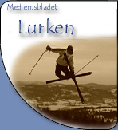
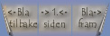

|
Hei kjære telemarkere! Det er sesongens aller første Lurken du står med I hånden nå. Vi har lagt om profilen litt ved å stifte sammen noen ark, framfor å lage det gamle Lurken-bladet. Vi har gjort dette for at det skal gå fortere og bli lettere å sette sammen en liten klubbavis I kjapt tempo. I fjor kom det som kjent bare ut en Lurk, noe som vi skal klare å slå I år. Målsettingen vår er å få ut fire utgaver av klubbavisen vår. Årets store nyhet på klubbavisfronten er at Lurken også er å finne på verdensveven på telemarkgruppas hjemmesider på: www.stud.ntnu.no/studorg/telemark Her skal vi prøve å legge ut litt flere bilder enn det blir I den noe gammeldagse trykte Lurken. Vi anbefaler derfor alle å gå inn på hjemmesidene våre for å sjekke ut de aller kuleste bildene. Vi setter også veldig stor pris på om noen har noen bidrag til en av våre utgaver. Hvis det er noen som har vært på en eller annen tur, har fått snusen I noe fett sladder, tatt noen kule bilder eller rett og slett føler for å si noen velvalgte ord til de andre I gruppa, så ikke nøl med å si ifra. Vi I redaksjonen blir I alle fall ufattelig glade. Håper dere koser dere med bladet vårt og regner med at vi treffer 90% av dere på Pray for Snow-partyet! Ski you later! Arne Snø i sikte! Telemarkgruppa går mot en ny skisesong. Jeg vil ønske alle gamle og nye medlemmer velkommen til en spennende sesong i Telemarkgruppa. Som alltid ser det ut til at vi kommer til å kjøre ganske høyt tempo og mange "events"! De aller fleste har vel begynt å glede seg til snøen allerede. Jeg har i alle fall gjort det lenge! Etter en høstfest som tok så av, har jeg skjønt at årets medlemsmasse har stort potensiale for Årturen som vi drar på i uke 5, for ikke å snakke om Pray for Snow som vi kjører i begynnelsen av november. Det bli med andre ord nok festmuligheter i regi av gruppa! Åreturen blir første tur med gruppa denne sesongen, dette er nytt av året fordi vi ønsket å prøve noe annet enn Oppdal. Det naturlige valget falt på Åre som byr på svært fine skiopplevelser. De som er glade i renn får muligheten i slutten av februar gjennom Alperittet på Stranda, Skifestivalen i mars og Galdhøpiggenrennet i april som setter det endelige punktum for sesongen. Underveis blir det gode muligheter til regelmessig trening både inne og ute. Nybegynnerkurs i telemark startes opp medio januar i Vassfjellet hvor vi kommer til å møtes to ganger i uken etter oppstarten av kurset. Innetreningene i høst foregår to ganger i uken, hvor vi har hatt enormt oppmøte på mandagene. Utfordringen til deg er at du kommer deg i bakken til vinteren og er med på treningene der! Jeg vil også benytte anledningen til å nevne at informasjonen om gruppa vil du også finne på vår hjemmeside som i høst har fått en kraftig ansiktsløfting. Jeg anbefaler at du tar en titt på den! Vi er mange i gruppa som er aktive gjennom verv. Uten mye frivillig innsats hadde det ikke vært mulig å holde samme tempo som vi gjør. Jeg vil derfor takke alle som har involvert seg aktivt i gruppa i år og invitere deg til å gjøre det samme gjennom å ta del i treninger og arrangementer! Jeg ser frem til en flott skisesong sammen med dere! Vi sees der snøen er! Henrik L. Langum Leder Telemarkgruppa |
|
  Side 2 |